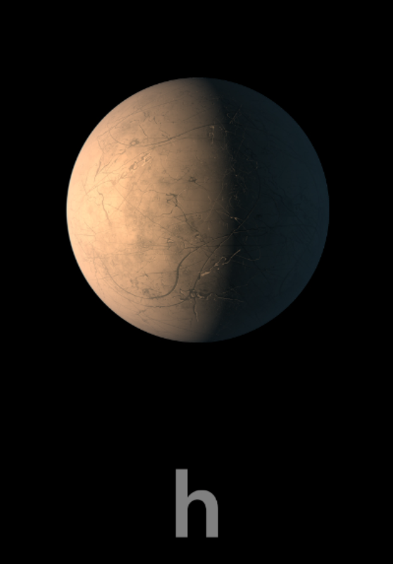

TRAPPIST-1 h

TRAPPIST-1 h es el séptimo y más alejado de los planetas conocidos del sistema.
Características
- Tipo: planeta de tamaño parecido al de la Tierra.
- Periodo orbital: aproximadamente 18.77 días terrestres.
- Es el planeta más distante de la estrella.
- Recibe menos energía que los otros seis planetas.
Dato interesante
Es el planeta que tarda más tiempo en completar una vuelta alrededor de TRAPPIST-1.
¿Podría tener vida?
Por su distancia a la estrella, podría ser demasiado frío para mantener agua líquida en la superficie. Su habitabilidad es más incierta que la de los planetas e, f y g.
Planeta anterior Todos los planetas